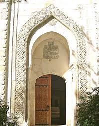
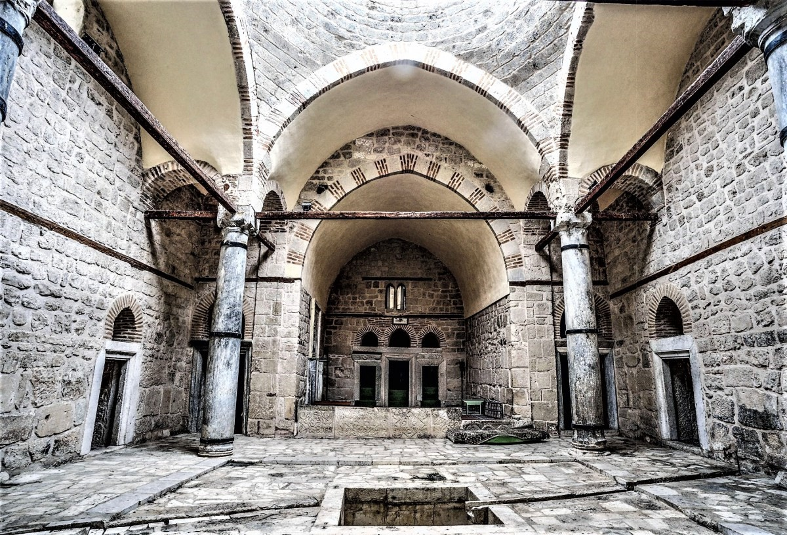
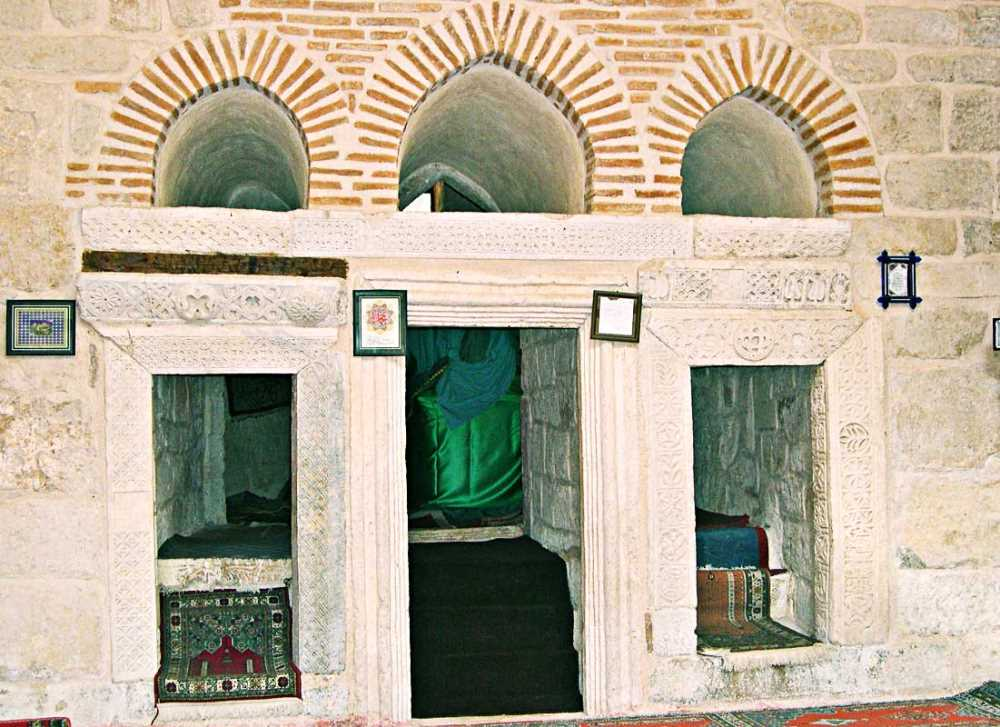

Ertokuş Medresesi
Bir medrese ile batı cephesine bitişik bir türbe ve doğusundaki bir camiden oluşur; ilk yapıldığında bugün yıkılmış bulunan bir hamamla sonradan yenilenmiş bir de çeşme bulunduğu sanılmaktadır. Bugün onarılarak iyi bir duruma getirilmiş olan medresenin, doğu cephesindeki taçkapı nişinin basık kemeri üzerinde bulunan sülüs hatla yazılmış beş satırlık kitâbeden 621’de (1224) Abdullah oğlu Ertokuş tarafından yaptırıldığı öğrenilmektedir; bânisine ait vakfiyenin tarihi ise muhtemelen 669’dur (1270-71). Burada görev yapan müderrislerin listesinden medresenin XVII. yüzyılın başlarına kadar faal olduğu anlaşılmaktadır.
Doğu-batı doğrultusunda inşa edilmiş olan medrese, dıştan 19,70 × 24,00 m. ölçülerinde düzgün olmayan dikdörtgen planlı ve kapalı avlulu, tek eyvanlı tiptedir. Kuzey ve güney cephelerinde, eksenin doğusunda söveli ve lentolu birer dikdörtgen kapı yer alır; cephelerdeki dikdörtgen pencerelerin onarım sırasında kapatıldığı anlaşılmaktadır. Yapıya, doğu cephe eksenindeki yüksek sivri kemerle örtülmüş dışa taşkın taçkapının basık kemerli açıklığından girilir. Taçkapı nişinin karşılıklı yüzlerinde sivri kemerli ve üç sıra mukarnas kavsaralı, beş köşeli birer niş bulunmaktadır. 10,00 × 10,30 m. ölçülerindeki yaklaşık kare planlı avluyu, eksenlere simetrik olarak yerleştirilmiş dört silindirik sütunla duvarlar arasına enine ve boyuna atılmış sivri kemerler bölüntüye uğratmış, böylece ortaya haçvari bir plan çıkmıştır. Avlu tepesi açık basık bir kubbeyle, eksenlerdeki birimler sivri tonozla, köşe birimleri ise beşik tonozla örtülüdür. Ortasında dikdörtgen bir havuz bulunan avlu kuzeyden üç, doğudan altı, güneyden dört ve batıdan iki mekânla bunların arasındaki eyvan tarafından kuşatılmıştır. Batıda, doğu-batı yönünde yer alan dikdörtgen planlı eyvanın iki yanındaki mekânlar kare, diğer mekânlar farklı doğrultu ve boyutlarda dikdörtgen planlıdır. Eyvan sivri kemerle, diğer mekânlar üzerlerinde sivri kemerli birer pencere bulunan söveli ve lentolu dikdörtgen kapılarla avluya açılırlar. Kare mekânlar tromp geçişli kubbe, diğer mekânlar ise sivri tonozla örtülüdür. Güneyde, eksenin doğusunda kuzey-güney yönünde bulunan dikdörtgen planlı dar mekân, içinden geçen su oluğu dikkate alınarak helâ, kare mekânlar da kışlık dershane olarak nitelendirilmektedir. Güney duvarındaki mihrap nişinden mescid olarak kullanıldığı anlaşılan eyvanın batı duvarında, üzerlerinde sivri kemerli birer pencere bulunan söveli ve lentolu üç kapı yer almakta ve bu kapılar bitişikteki türbeye açılmaktadır. Eksende yer alan sivri kemerli fevkanî ikiz pencere, türbenin yalnızca iki yandaki birer duvarla medreseye birleştirilmiş olması sebebiyle boşluğa açılmakta ve âdeta bir süs öğesi durumu göstermektedir. İki yandaki kübik kaideli, kesik piramit başlıklı, silindirik gövdeli birer sütunla sınırlandırılmış olan mermer mihrap dikdörtgen çerçeveli, sivri kemerli ve beş sıra mukarnas kavsaralıdır.
Yapıda kesme taş, moloz, devşirme malzeme, tuğla ve sıva kullanılmıştır. Kesme taş, düzgün ve kaba yontu olarak bezemeli ve bezemesiz devşirme malzemeyle birlikte duvar örgüsünde, doğu cephe dışında düzensiz bir teknikle uygulanmıştır; moloz yalnız batı cephenin üst bölümünde görülür. Duvar örgüsünün yanı sıra sütunlarla açıklıkların söve ve lentolarında, eyvanın oturtmalığının doğu yüzünde, döşemede ve su oluğunda genellikle bezemeli devşirme malzeme kullanılmıştır. Tuğla, eyvan ve giriş kemeri dışında yapıdaki bütün kemerlerde ve eyvanın kuzeyindeki odanın örtü sisteminde görülür. Örtü sisteminde, tuğlaların farklı yönde çapraz istiflenmesiyle balık sırtı örgü oluşturulmuştur. Eyvan ve giriş kemeri bir taş - dört tuğla düzeninde almaşık tekniktedir. İçten duvarlar ve örtü sistemi beyaz sıva ile kaplanmıştır.
Süslemeler, devşirme malzeme hariç yalnız taçkapı ve mihrapta görülmektedir. Taçkapının yüksek sivri kemeri, düz ve yuvarlatılmış çizgilerin iç içe geçmesi ve aralarında düğümlenmesiyle oluşan yürek ve baklava benzeri geometrik motiflerle süslenmiştir. Dıştaki dar şerit iç içe silmeli sivri kemerlerle, içteki kaval silme ise çapraz silmelerle hareketlendirilmiştir. Girişin kenarlarındaki nişleri iki taraftan sınırlayan şeritte yan yana silmeli ve aynalı kemerler görülür. Mihrabın dış çerçevesi dilimli kemer biçimi dendanlarla, kemer köşeliklerindeki rozetler on iki kollu yıldız geçmelerle, kemer hasır örgü ve nişteki madalyon ise yine on iki kollu yıldız geçmelerle bezenmiştir. Bu medrese, Anadolu Selçukluları dışında pek görülmeyen kapalı avlulu medreseler içinde, kubbenin bütünüyle duvarlardan kurtarıldığı tek ve oldukça erken tarihli bir örnek olması açısından önem taşımaktadır.
Sekizgen prizma gövdeli türbe içten kubbe dıştan piramidal külâhla örtülüdür. Kuzey, doğu ve güney cepheleri ekseninde yuvarlak kemerli birer fevkanî pencere bulunur. İçinde, tartışmalı olmakla birlikte bazı araştırmacılarca Mübârizüddin Ertokuş’a ait olduğu öne sürülen bir sanduka vardır. Yapıda kesme taş, tuğla, çini ve sıva kullanılmıştır. Duvar örgüsünde sarımtırak ve kırmızı taşların oldukça düzgün bir teknikte bir arada uygulanmasıyla renk almaşıklığı sağlanmıştır. Cephelerin köşelerindeki pilastırlar şaşırtmalı teknikte tuğlalarla örülmüş, içte döşeme kare tuğlalarla kaplanmıştır. Sandukanın fîrûze renkli çini kaplaması kısmen görülebilmektedir. Duvarlar ve örtü sistemi beyaz sıvalıdır. Türbenin, eyvana asimetrik yerleştirilmiş kapılar aracılığıyla açılması, kapıların üstündeki ikiz pencereyi kapatarak işlevsiz hale getirmesi, medreseye kuzeydoğu ve güneydoğu cephelerindeki duvarlarla dıştan bağlanmış olması ve ondan oldukça farklı bir teknik ve malzeme ile inşa edilmesi türbenin medreseye sonradan birleştirildiğini göstermektedir. Medresenin doğusunda yer alan ve Böcüzâde Süleyman Sâmi’ye göre 900 (1494-95) yılında yapıldığı kabul edilen Feyzullah Camii XIX. yüzyılda büyük ölçüde yenilenmiştir. Çok sayıdaki oymalı başlıklı ahşap direklerin XIII. yüzyıl Selçuklu özellikleri göstermesinden dolayı bu yüzyıla ait bir ulu caminin temelleri üzerine inşa edildiği ileri sürülmektedir.


